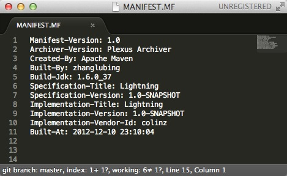

开始使用Laravel4
Laravel 4 是流行的PHP框架Laravel的一个最新升级版本。Laravel是一个“干净优雅”的用于Web开发的现代PHP框架。受Ruby on Rails，以及Symfony框架的启发，Laravel 4致力于让你使用近年来日益完善的PHP新技术来开发好的web程序。
Laravel 4脱胎于Laravel 3，但是对上一个版本又做了很多的改进。现在，Laravel 4是一个经过了大量测试，并且在维持干净优雅的语法结构的基础上，继续添加新的组件和特性的框架。
Laravel 4通过Composer来管理更新和独立的第三方组件
no branches ready for upload
You must do the following steps:
$ repo abandon <branch> <project>
$ repo start <branch> <project>
$ git reset --hard <latest-github-commit-id>
(git add/commit)
$ repo upload <project>使用Maven定制MANIFEST.MF文件
对于Java开发者来说，对MANIFEST.MF文件应该不陌生，至少有所耳闻。我们打开任何一个jar包，都会看到一个METE-INF目录，该目录下必然有一个MANIFEST.MF文件，这个文件是用来描述当前jar文件的信息。
举个例子，下面是我们常使用的c3p0-0.9.1.2.jar文件里的MANIFEST.MF内容：
Manifest-Version: 1.0
Ant-Version: Apache Ant 1.7.0
Created-By: 1.5.0_07-87 ("Apple Computer, Inc.")
Extension-Name: com.mchange.v2.c3p0
Specification-Vendor: Machinery For Change, Inc.
Specification-Version: 1.0
Implementation-Vendor-Id: com.mchange
Implementation-Vendor: Machinery For Change, Inc.
Implementation-Version: 0.9.1.2
它看起来简单明了，我就不多解释了。当然，不同的jar包里的内容可能完全不同，比如说Springframwork的那些jar文件，内容不但多了许多，而且名称也都变得不同。
我曾经参与的一个Web项目中，有一个需求是在页面某个位置显示代码构建的时间，看起来差不多是这样的：
Build At: 2012-12-10 23:54:22
（当时的情况还要求显示代码的版本号，具体做法本文先略过。）
当时就是采用定制MANIFEST.MF（加入构建时间戳），并用程序读取该时间戳实现的！ 接下来就结合该需求说说在使用Maven构建的项目中，如何为MANIFEST.MF增加自定义内容，并完成该功能。
首先，在pom.xml文件中增加属性：
<properties>
<maven.build.timestamp.format>yyyy-MM-dd HH:mm:ss</maven.build.timestamp.format>
</properties>接下来配置maven-war-plugin插件，在configuration里增加archive节点，配置如下：
<plugin>
<groupId>org.apache.maven.plugins</groupId>
<artifactId>maven-war-plugin</artifactId>
<version>2.1.1</version>
<configuration>
<archive>
<manifest>
<addDefaultImplementationEntries>true</addDefaultImplementationEntries>
<addDefaultSpecificationEntries>true</addDefaultSpecificationEntries>
</manifest>
<manifestEntries>
<Built-At>${maven.build.timestamp}</Built-At>
</manifestEntries>
</archive>
</configuration>
</plugin>这样，当你再次打包工程时，新打包的文件里的MANIFEST.MF就会包含构建时间，如图：

PS：你还可以增加更多内容，只需要在manifestEntries节点中增加key-value值就OK啦。最后一步：你需要写一小段代码来获取该构件时间，把它显示在你的页面上。
或许你已经知道大名鼎鼎的框架Springframework获取版本号的代码是这样的(详见SpringVersion.java)：
public static String getVersion() {
Package pkg = SpringVersion.class.getPackage();
return (pkg != null ? pkg.getImplementationVersion() : null);
}但很遗憾这种方式在Web项目中不起作用。因为为Web应用编写的Java代码，会编译为class文件并放在$WEBROOT/WEB-INF/classes目录下，而war包的MANIFEST.MF文件位于$WEBROOT/META-INF目录下，它们不在同一个“包”下。事实上，Package类根本没有提供任何获取自定义值的方法（哈哈哈），详见Package.html。
所以 --- 是时候自己动手了。
使用Idea社区版开发Web项目
在很久很久以前，就听说IDEA是个绝佳的Java开发工具，奈何囊中羞涩，个人对付费软件只能望而却步；一直善良老实的我，也不好意思去CRACK。所以一直都是使用开源免费的Eclipse作为工作和学习的IDE。 其实以前也尝试使用过社区版，心里总觉得嘛，功能不全，试试而已，然后就搁下了，所以它一直只是我桌面上的一个的图标而已。。。
但是IDEA绝不是鸡肋！它已经有很多优秀的功能（只会用小部分功能，待挖掘。。。目前感觉很快，够敏捷，:-)），完全值得我们去尝试，相信很多Eclipse使用者，特别是Eclipse EE版的使用者，可能会嫌弃它没有Web开发功能，但事实上我们也可以用它来开发Web项目的。
下面会来证明这一点，我会用IDEA + Maven + Jetty来开发Web项目，主要演示下如何调试代码。
（真希望你对Maven不陌生，否则花一点时间去学习一下吧，你会喜欢它的。）
首先我们来创建一个Maven项目，项目类型选择“Maven Module”，输入项目名称“demo”。

选择项目使用的Archetype为“maven-archetype-webapp”，这里也可以随便修改下GroupId等信息。

这一步直接点击“Finish”。

打开Maven的配置文件pom.xml，在build节点中添加如下代码，即增加Maven的Jetty插件。
<plugins>
<plugin>
<groupId>org.mortbay.jetty</groupId>
<artifactId>maven-jetty-plugin</artifactId>
<version>6.1.26</version>
<configuration>
<connectors>
<connector implementation="org.mortbay.jetty.nio.SelectChannelConnector">
<port>8080</port>
</connector>
</connectors>
<scanIntervalSeconds>10</scanIntervalSeconds>
</configuration>
</plugin>
</plugins>选择工具栏的"Run"-->"Edit Configurations..."，打开“Run/Debug Configurations”窗口，点击绿色的“+”号按钮，在弹出的下拉列表里选择“Maven”。

取一个名称，比如“demo-jetty”；在"Working directory"一栏选择你的工作目录，并在"Command Line"里输入“jetty:run”。然后点击“OK”。

到此，配置已经OK了，在工具栏上出现了一个名为“demo-jetty”的运行项，点击后面的调试按钮就可以进行调试了。

当然，Web开发还有很多方面啦，这篇仅仅是演示了如何使用IDEA结合Maven来开发（着重调试）Web项目。路漫漫其修远兮，吾将上下而求索，我也是初步来尝试IDEA，希望以后可以把它用好！！
Lucene简介和入门
这几天我花了些时间去研究了下Lucene，读了很多博客和文章，也写了些示例代码，对全文检索以及使用到的技术都有了认识，感觉非常好。
Lucene是当今非常流行的全文检索工具，对于我们开发者来说，给应用添加一个搜索功能确实容易很多了，希望在接下来的项目里可以一施拳脚。
接下来对Lucene进行一个初步的介绍，并附带一个简单的示例程序。
Lucene 简介
Lucene是一个基于Java的高性能、可伸缩的全文信息检索库，它提供了简单而强大的API，让你很容易为文档创建索引，并基于创建的索引进行搜索。
Lucene是由资深全文索引/检索专家Doug Cutting创建的，开始是给自己的博客程序使用，后来开源出来，如今它已成为Apache软件基金会的顶级项目，也成为最受欢迎的Java全文信息检索工具。
Lucene 原理
Lucene主要完成两件事：
- 创建索引
- 基于索引搜索。
创建搜索是一件非常关键的一步，Lucene 采用的是一种称为反向索引（inverted index）的机制。
先说下什么是正向索引（若是有这个概念的话），给你一些文档，让你找到里面的词/短语，类似小学课堂上，老说问：“同学们，有谁来总结下这篇文章讲了什么？”，这是一个从文档到词/短语的过程。
而反向索引刚好相反，它是指从词/短语到文档的过程，举一个例子：给出“Java”这个关键字，找到所有Java相关的文档。
当索引创建已经创建好之后，搜索文档就是先到索引库里去找索引，然后根据找到的索引找到文档。整个过程可以用下图表示：

入门示例
创建索引
public void index() throws IOException {
try {
String docsDir = "src";
String indexDir = "target/index";
Directory directory = FSDirectory.open(new File(indexDir));
Analyzer analyzer = new StandardAnalyzer(Version.LUCENE_40);
IndexWriterConfig config = new IndexWriterConfig(Version.LUCENE_40, analyzer);
IndexWriter writer = new IndexWriter(directory, config);
indexDocs(writer, new File(docsDir));
writer.close();
} catch (IOException e) {
e.printStackTrace();
}
}
private void indexDocs(IndexWriter writer, File path) throws IOException {
if (path.isDirectory()) {
File[] files = path.listFiles();
if (files != null) {
for (int i = 0; i < files.length; i++) {
indexDocs(writer, files[i]);
}
}
} else {
Document doc = new Document();
doc.add(new StringField("name", path.getName(), Field.Store.YES));
doc.add(new StringField("path", path.getPath(), Field.Store.YES));
doc.add(new TextField("contents", new FileReader(path)));
System.out.println("adding " + path);
writer.addDocument(doc);
}
}基于索引搜索
public void search() {
String index = "target/index";
String searchField = "contents";
String keyWorld = "String";
try {
IndexReader reader = DirectoryReader.open(FSDirectory.open(new File(index)));
IndexSearcher searcher = new IndexSearcher(reader);
Analyzer analyzer = new StandardAnalyzer(Version.LUCENE_40);
QueryParser parser = new QueryParser(Version.LUCENE_40, searchField, analyzer);
Query query = parser.parse(keyWorld);
System.out.println("Search [" + keyWorld + "]:");
TopDocs results = searcher.search(query, 10);
ScoreDoc[] hits = results.scoreDocs;
for (int i = 0; i < hits.length; i++) {
Document doc = searcher.doc(hits[i].doc);
System.out.println(doc.get("name"));
}
reader.close();
} catch (Exception e) {
e.printStackTrace();
}
}项目基于Maven，完整源码请点击下载：lucene.zip